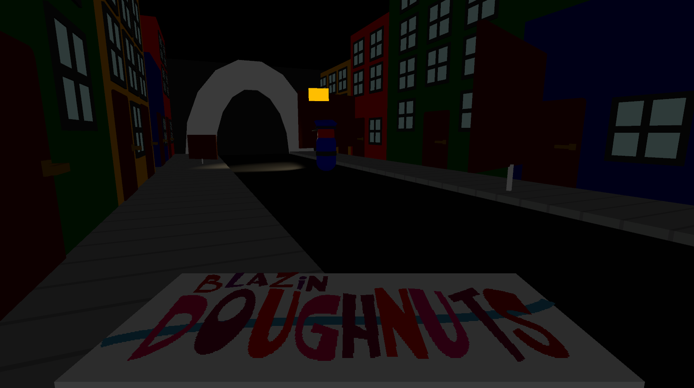
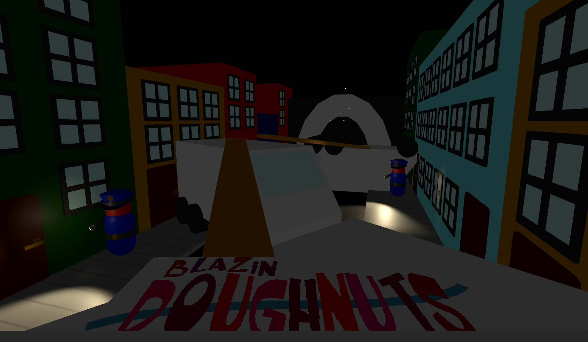
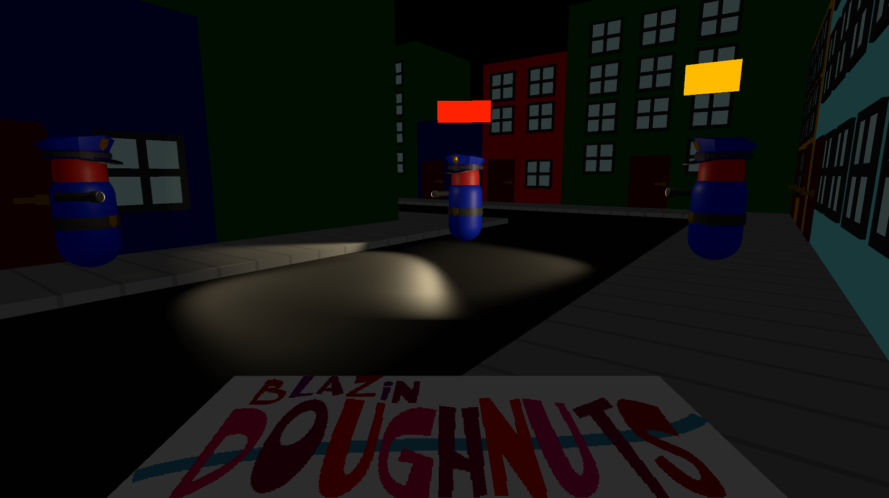

Blazin' Doughnuts
Blazin' Dougnuts is a game of stealth and wits! Your job is to smuggle in a fresh box
of Blazin' Doughnuts to the target zone without getting caught by the guards. No doubt
that they are hungry. Your skills in hiding and patience will be key in this game.
Blazin' Doughnuts was created during the Ludum Dare 53 in 2023. While working a full time job, I wanted to do something different and go back to my roots (game jams). Thus, I joined the Ludum Dare and made Blazin' Doughnuts.
Engine: Unity
Software Used: Visual Studio, Blender
Languages: C#
Timeframe: 72 hours
Status: Complete
Download here!
Blazin' Doughnuts was created during the Ludum Dare 53 in 2023. While working a full time job, I wanted to do something different and go back to my roots (game jams). Thus, I joined the Ludum Dare and made Blazin' Doughnuts.
Engine: Unity
Software Used: Visual Studio, Blender
Languages: C#
Timeframe: 72 hours
Status: Complete
Download here!
My Contributions
In addition to the following, I made all of the basic assets inside of the game using Blender and Unity ProBuilder.

Arguably the most important mechanic in the game, the Guards act as the main obstacle for the player. If the Guard catches the player, the player fails level and starts back at the beginning.
The Guards have an "ALERT" level system that dictates its AI. If a guards Alert Level is low (indicated by a blue bar above its body), the Guard will stand still turn around several times every few seconds. If the Alert Level is yellow, the Guard begins to patrol around. Each Guard has a different patrol that it will follow. Finally, when the Alert Level is red, it will chase the player until its Alert Level goes back down to yellow, where it will continue to patrol. An Alert Level once it reaches Yellow will never go back down to blue.
I utilized the built in navmesh for simple movement around the map for the Guard. They are able to go around obstacles and will follow the player until its Alert Level goes down.

Guard AI
Arguably the most important mechanic in the game, the Guards act as the main obstacle for the player. If the Guard catches the player, the player fails level and starts back at the beginning.
The Guards have an "ALERT" level system that dictates its AI. If a guards Alert Level is low (indicated by a blue bar above its body), the Guard will stand still turn around several times every few seconds. If the Alert Level is yellow, the Guard begins to patrol around. Each Guard has a different patrol that it will follow. Finally, when the Alert Level is red, it will chase the player until its Alert Level goes back down to yellow, where it will continue to patrol. An Alert Level once it reaches Yellow will never go back down to blue.
I utilized the built in navmesh for simple movement around the map for the Guard. They are able to go around obstacles and will follow the player until its Alert Level goes down.
Player Controls
Since this is a Stealth Game, there are several mechanics that the player has access to: Walking, Jumping, Crouching, and Sprinting. All obstacles will require at least one of these mechanics. In addition, sprinting near a Guard will increase their Alert Level twice as fast as walking/standing. Crouching will increase their Alert Level at half the speed of walking and standing, but your movement speed is also reduced to half.
The image below shows an obstacle where the Player needs to jump over the vehicle, or else they will most likely be caught by a Guard.
Various Pictures

